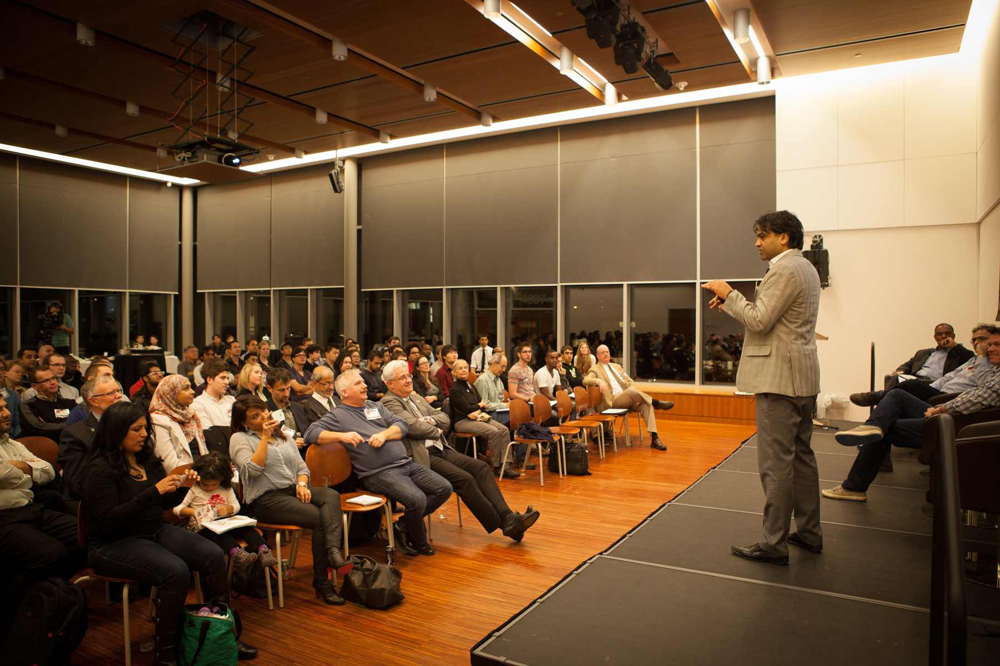

Application for speakers
The Ontario Makers and Mentors Conference is a student initiative to bridge the gap between makers and mentors to promote innovation through technology in the classroom and society. Our conference will be held in Ottawa at the University of Ottawa campus. We will be hosting our inaugural conference the weekend of October 26th-28th and this year’s theme is “Making Globally”. We are currently looking for people who have a background or an interest in education, making, design, or innovation to speak or run a demonstrations at one of our sessions. If you are interested, please fill out the following form. If you have any questions, do not hesitate to contact speakers@ommic.ca.
Sessions will last about 40 minutes and fit into one of the three streams: Mentors, Makers, or Skill Building. The lists below contain some session topic ideas but are not limited to the following. Please browse our list of ideas and contact us if you would be interested in one of the following or if you have another topic idea.
Maker Stream
- 1 project, 3 ways; How 3 separate makers all conquer the same project
- Virtual Reality and immersive journalism
- Programming art and music
- Creating a virtual world; from filming to viewing
- Game Making
- Finding the free version open source, makerlabs and freecycling, junkyard wars, and the gold in garbage
- MD to 3D: 3d printing and making in the health sciences
- Premaking-Making in a team (you have an idea, now find a team to make it happen), division of labor myers briggs
- Turning hobbies into profit; from maker to entrepreneur
- Materials: when, where and why
Mentor Stream
- Empowering Vulnerable communities through technology
- The Making of a Makerspace
- Maintaining the equipment, sustainable ecosystem; sustaining a makerspace, reducing the makerspace waste, setting up recycling systems.
- Maker’s Ed how to integrate makerspaces into the curriculum
- Teaching kids how to design something
- Girls in tech.
- STEM to STEAM
- Myths of the makerspace - Q&A
Skill building Stream
- Essential tools, best practices of makers
- ”Building” canada
- Reverse engineering
- Building Ideas: the brainstorm session
- 3D Printing and Design
- Programming and Robotics